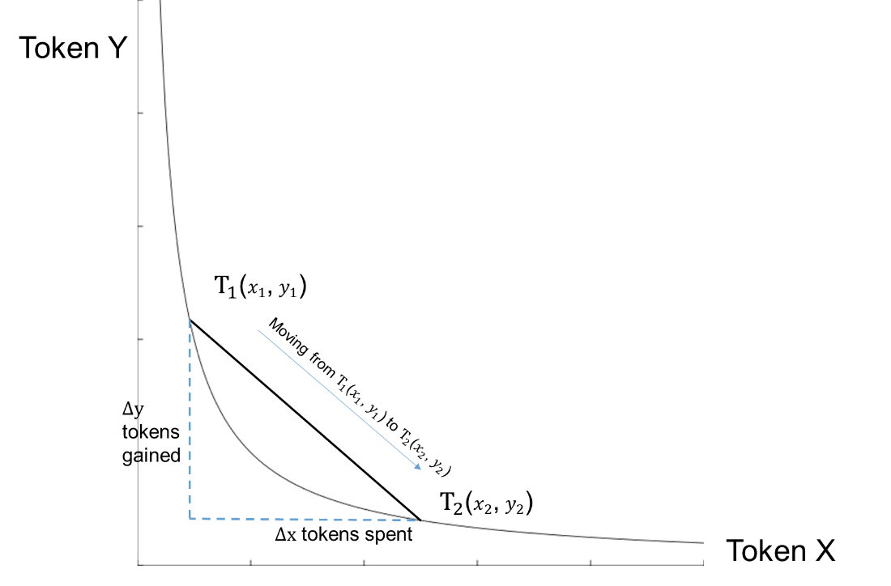

Liquidity Provider以及Impermanent loss分析
1. 背景
为了实现去中心化交易平台（decentralize exchange），交易平台需要有一个流动资金池（Liquidity Pool）。由于交易平台的功能就是币币交易，因此该资金池内需要有交易的两种货币，比如10个BNB和200个CAKE。当一个需要CAKE币的人手上有BNB的时候，就把自己的BNB送入流动资金池内，然后取出对应的CAKE。
进行币币交易的人需要缴纳一定的手续费给流动资金池。这些手续费就按比例分配给流动资金池中的每一个提供者（Liquidity Provider）
2. 流动资金池分析
在上面的例子中可以看到流动资金池的两种货币的数量会发生变化。实际上，正是资金池内两种货币的数量发生了变化，因此导致了币币交易之间的汇率不同。
举例来说，本来一个流动资金池内两种货币有200个CAKE和10个BNB，这个时候1个BNB值20个CAKE。现在有一个人想换20个CAKE，他将一个BNB放入流动资金池，然后从中取出20个CAKE。现在流动资金池内有180个CAKE和11个BNB，那么这时1个BNB值16.4个CAKE。
上面的例子夸张的突出了汇率的变化，在实际交易过程中每一笔交易相较于流动资金池的总量都不足以引起汇率的变化（就像股票市场上一两个散户的交易不会影响股价）。
流动资金池在实际交易过程中会符合XYK原则，也就是说流动资金池内两种货币的数量X、Y满足$X \times Y = K$，其中K是常数。也就是说货币数量X和Y满足反比例函数的关系，如下图。每一次交易就是一次在该曲线上的移动。但是由于每次的交易数量都非常小，因此在使用极限的思想可以认为每次交易的汇率都是当前点的斜率。

3. 收益分析
当加密货币的持有者选择将资金放入流动资金池时可以赚取手续费作为回报，通常这个回报非常高，年收益高达50%-300%。但是当资金进入流动资金池时，存入的数量和取出来的数量会不等（从上面的例子可以看出），此外取出来的加密货币对应法币的价值也有差异，这些变化带来的损失就是永久损失（permanent loss）。
计算永久损失的过程比较复杂，可以直接跳到最后查看结论。
3.1 收益计算
为了量化非永久损失，假设投资者放入了A货币X个和B货币Y个。此时1个A货币的价值为$x_p$个美元，1个B货币的价值为 $y_p$个美元。那么投资者的总资产为$T = X x_p + Y y_p$。所有都的变量满足如下的等式：
解得：
| 投入流动资金池 | 不投入流动资金池 | |
|---|---|---|
| 开始资金 | $T = 2\sqrt{Kx_p y_p}$ | $T = 2\sqrt{Kx_p y_p}$ |
| 结束资金 | $T’ = 2\sqrt{Kx_p’ y_p’}$ | $T’’ = \frac{\sqrt{K}( x_p’ y_p + y_p’ x_p)}{\sqrt{x_p y_p}}$ |
| 资金比值 | $ r = \frac{\sqrt{x_p’ y_p’}}{\sqrt{x_p y_p}}$ | $r = \frac{x_p’ y_p + y_p’ x_p}{2x_py_p}$ |
3.2 化简
为了化完善并且化简模型，做出如下假设：
-
手续费收回报率为i；
-
假设B货币为某种等价货币（例如USDT），即$y_p = y_p’ = 1$；
-
设A货币的涨幅为$t = x_p’ / x_p - 1$
| 投入流动资金池 | 不投入流动资金池 | |
|---|---|---|
| 开始资金 | $T = 2\sqrt{Kx_p}$ | $T = 2\sqrt{Kx_p}$ |
| 结束资金 | $T’ = 2\sqrt{Kx_p’} + 2i\sqrt{K x_p}$ | $T’’ = \frac{\sqrt{K}( x_p'+ x_p)}{\sqrt{x_p}}$ |
| 资金比值 | $ r = \frac{\sqrt{x_p’} + i\sqrt {x_p}}{\sqrt{x_p}} = \sqrt{ t + 1} + i$ | $r = \frac{x_p’ + x_p}{2x_p} = \frac{t}{2} + 1$ |
3.3 升值分析
可以看到上面的情况并没有考虑手续费的收入，此时不妨设手续费的收入为$2i\sqrt{Kx_p}$。那么为了维持保证在货币A升值的情况下，收益没有减少就要使下面等式成立： $$ 2\sqrt{Kx_p’} + 2i\sqrt{Kx_p} = \frac{\sqrt{K}(x_p’ + x_p)}{\sqrt{x_p}} $$ 解得：$i = \frac{t^2}{2}$，其中$t = x_p’ / x_p - 1$也就是涨幅。
3.4 贬值分析
这里，我们思考如果A货币贬值，手续费要多高才能保证本金不受损。同样我们考虑手续费为$2i\sqrt{Kx_p}$。想要本金不受损，也就是最后的收益大于等于最开始的本金： $$ 2\sqrt{Kx_p’} + 2i\sqrt{Kx_p} =2\sqrt{Kx_p} $$ 解得：$i = 1 - \frac{\sqrt{x_p’}}{\sqrt{x_p}} = 1- \sqrt{t + 1}$，其中$t = x_p’ /x_p - 1$也就是涨幅。
4. 结论
根据以上分析可以得到：如果将两种货币放入资金池。将其中一种作为标的物（例如USDT），另一种货币的涨幅为$t$（可为正数或者负数）；并且手续费回报率为$i$，则：
-
前后资金比值$r = \sqrt{t + 1} + r$
-
只要收益率$r$大于$\frac{t^2}{2}$，即可超过在增值期间直接持有两种货币的收益。
-
只要收益率$r$大于$1-\sqrt{t+1}$，即可弥补在贬值期间货币的亏损。